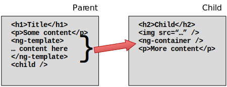
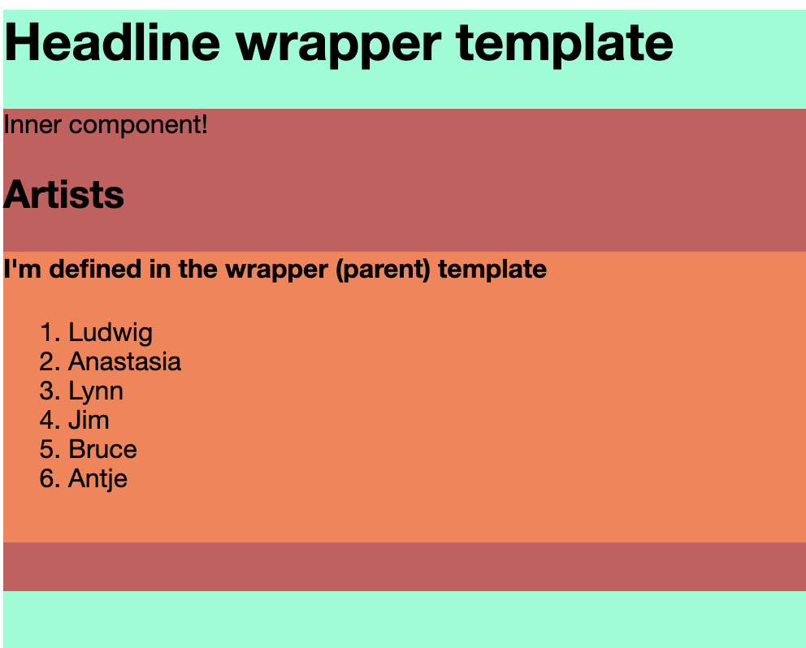

Angular ng-template to inject content into other components
Here’s the problem: Sometimes, you want to use mostly the same presentation, but change something in it, or the functionality when a user interacts with it should be different. In this case, I wanted to create a list of artists, but have the behavior of links on it be different for two cases:
- If it is displayed on the artist page, a click on an artist should display detail information
- If it is displayed on the albums list page, a click on an artist should display all the albums by that artist or group.
Duplicating the entire component code is out of the question, because then we’d be stuck with making any later changes twice — If we even remember doing so.
The Setup
We can use Angular’s
ng-template feature to define part of a template and pass that template fragment to the child
component for rendering. This allows us to reuse all of the child template, but change certain
parts of it depending on the parent’s context. An example would be to change the way a list
of items is rendered or to determine the url of a link which should be different in each case.
The setup will look something like this between a Parent and a Child component:

So here we see the following relationship between the parent and child components:
- The parent component defines a template fragment using the
<ng-template />tag - The child component has its own template, where it embeds a
<ng-container />placeholder - The parent component embeds the child component by using its Angular tag
<child />defined in the child’s@Component()annotation.
Implementation
Here is an example of a TestWrapperComponent template, which will serve as the parent:
<div>
<h1>Headline wrapper template </h1>
<ng-template #customWrapperTemplate>
<div>
<h4>I'm defined in the wrapper (parent) template</h4>
...
</div>
</ng-template>
<app-tlist [listTemplate]="customWrapperTemplate"></app-tlist>
</div>There are three things to notice:
- In lines 3-8, it defines a
<ng-template />with a template reference variable named#customerWrapperTemplate. - In line 9, it includes the child template, named
<app-tlist />, and passes the template reference via property binding to a variable of the child component by the name oflistTemplate. So we’re passing a reference to a template to a property of the child class! - This template can contain any markup you like; Here, we have a
<div/>and a headline, but you could of course include any require markup to render your component’s intent. We will later see how we can pass data to dynamically render a list.
So now that we know there is property binding involved, let’s take a look at the corresponding child component’s relevant TypeScript code:
@Component({
selector: 'app-tlist',
templateUrl: './tlist.component.html',
})
export class TlistComponent {
@Input()
public listTemplate: TemplateRef<any>;
}The interesting code here is in lines 7 and 8. It shows that we’re creating an @Input() property
by the name of listTemplate for the property binding of a thing of type
TemplateRef.
As the Angular Doc says:
[TemplateRef] … represents an embedded template that can be used to instantiate embedded views.
So in other words, it’s describing exactly what we’re doing here by passing the reference to a template fragment to another component via property binding.
Let’s take a look at the child component’s template:
<div>
<p>Inner child component!</p>
<h2>A Headline</h2>
<ng-container *ngTemplateOutlet="listTemplate;"></ng-container>
</div>Short and sweet, we notice that it’s using normal markup with the exception of the <ng-container />
in line 4. It is assigning the passed-in template reference to the *ngTemplateOutlet directive
in order to render the template from the parent component in this place in the HTML. This completes
the embedding of the template, but most of the time we want to display dynamic data in the embeded
component, and that’s next.
Rendering child data in the passed component
In our case, we want to render a list of names in the template fragment, so we need to make sure that we can get data into it. Instead of using a service, I’m going to use a hard-coded array in the following format:
export class TlistComponent {
@Input()
listTemplate: TemplateRef<any>;
public data = {
people: [
{testId: 1, name: 'Ludwig'},
{testId: 2, name: 'Anastasia'},
{testId: 3, name: 'Lynn'},
{testId: 4, name: 'Jim'},
{testId: 5, name: 'Bruce'},
{testId: 6, name: 'Antje'},
]
};
}I’m using the child component to load the data. That is a sensible approach in this case, as the parent components are passing different templates into the child component to display the same data types differently. Therefore, it makes sense that the data is loaded in the child component.
The first thing we need to do is assuring that the data makes it into the template fragment we’re
passing. This happens via a context that can be passed to the *ngTemplateOutlet like this:
<ng-container *ngTemplateOutlet="listTemplate; context: data"></ng-container>This sets the data context for the passed template to the class property of data, i.e. passes
an object with the top-level property of people defined in TlistComponent.
So now that we have the data to render in our template fragment passed via <ng-template />
from the TestWrapperComponent (in our very first code listing), we can go and render the data
in the passed template fragment. The entire fragment would look like this:
<ng-template #customWrapperTemplate let-userList="people">
<div>
<h4>I'm defined in the wrapper (parent) template</h4>
<ol>
<li *ngFor="let user of userList">{{ user.name }}</li>
</ol>
</div>
</ng-template>It is a generally used scheme in Angular to use a let- prefix to define a variable in this
use case. In our case, the let-userList creates a userList property in the template, which is
populated with the contents of the people property of the passed data, as shown on line 1.
To summarize this part of the exercise, looking back at our data structure, we
- set the
contextfor<ng-container />in the child component to thedataobject property of our data set and - now, in line 1, bind the
userListproperty used in the*ngForon line 5 to thepeopleproperty of the passed-in data from the child component.
Looking back at the mock data in the TList component, userList now refers to the array of the
objects in our mock data. The component now simply loops over this array and renders the data
in an ordered list.
Summary
With the ng-template feature discussed in this post, we get a page that looks like this
(background colors added to the various parts for clarity, to identify each component and
template fragment):

- The coral colored, central content is based on a template contained in the outermost template which is rendered here in light green.
- The red colored template is the child template, which gets the list template (coral colored) injected and retrieves the data to render the list.
With this functionality, we can reuse component template fragments and populate them with varying, different content templates.